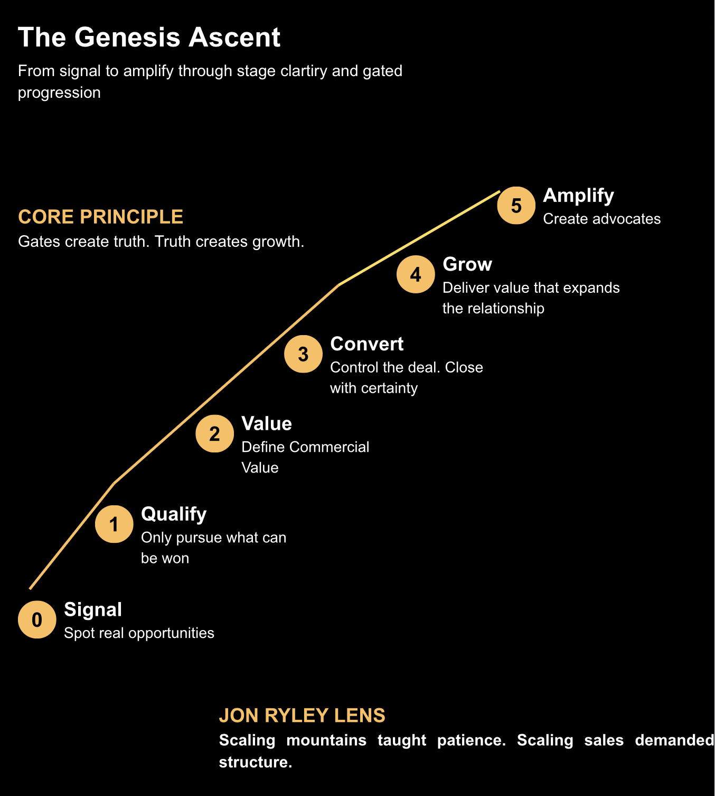

The Gated Business Lifecycle — aligning signal to scalable growth through disciplined progression.

Every stage has purpose. Every gate enforces discipline.
No more false pipeline movement or optimism-driven forecasting.
Delivery becomes expansion. Customers become advocates.
The public model shows the structure. Full implementation embeds this into CRM, pipeline, leadership rhythm, and AI-enabled growth.
Start a conversation